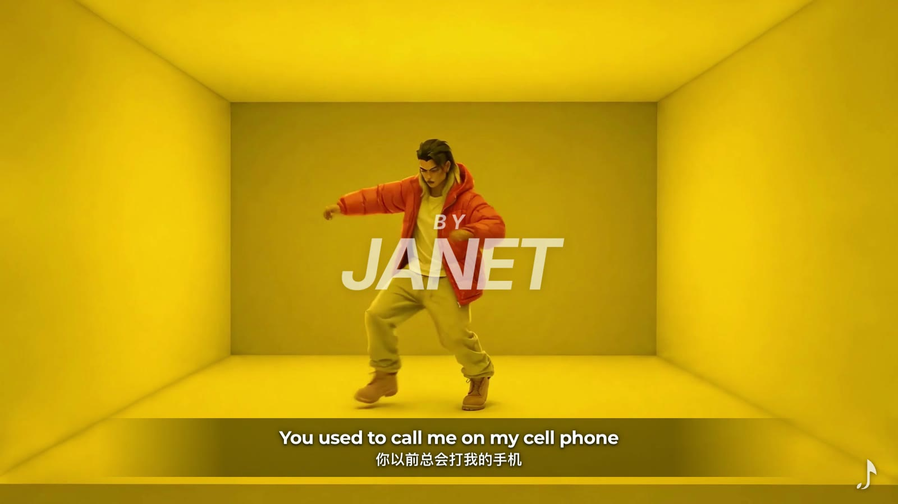

原始母带
原始音频与参考视频进入素材池，先确定 113 BPM、A minor 和整支片的时间长度。

Visual Dance MV / Complete Archive
安静不是没有热度。四个角色在橙、黑、灰的空间里，把身体、节拍和镜头推进同一条时间线。
网页播放版由 1080p 最终母版转码为 720p H.264，保留完整画面与最终混音，同时把加载体积控制在适合公开站点的范围。
角色文件完整进入公开档案：黑色主舞者、第二黑色轮廓、灰阶尤克里里乐手与橙色主角，各自承担不同的运动重心与视觉温度。
场景不是独立海报，而是服务节奏的空间节点：每次色块、深度和光线变化都对应动作推进。
从开场定调到结尾收束，时间线画面全部保留，能直接追踪角色切换、场景衔接和节奏密度。
这一组记录场景参考如何被拆开、重组并转成 QUIET HEAT 自己的颜色、人物与镜头关系。
工程中保留完整混音、备用人声、原始母带、伴奏、清唱与克隆素材等声音层。公开页呈现流程与最终成片，不开放原始 stems 下载。
原始音频与参考视频进入素材池，先确定 113 BPM、A minor 和整支片的时间长度。
把节奏骨架与人声层分开处理，用于动作密度、段落转场和角色出现时机。
独立保留 Fade 01–10 的总克隆素材，作为声音设计与版本对比的一部分。
正式混音负责成片的主节奏与声音空间。
备用人声版本保留为可回退的完整分支，不覆盖正式混音。
最终声音与 1920×1080 / 30fps 画面封装为 101 秒成片。
公开边界：这里已经把作品和制作过程尽可能完整地放进网站，但原始音乐 stems、克隆素材音频和第三方参考视频只做流程登记，不提供下载，避免把工程素材误当作公开授权资源。